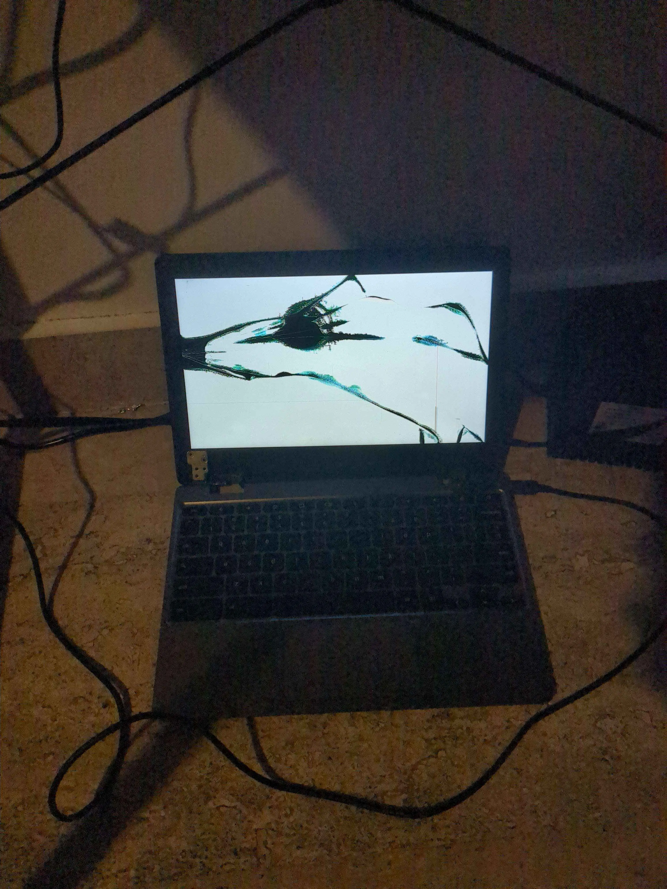

Entonces... Linux!.
Hablemos de linux, o mejor dicho de la genuina odisea de meter linux a una Crhomebook administrada por una escuela con una pantalla rota y uno de sus puertos usb no funciona donde cabe resaltar no tenia ninguna experiencia en "reparar computadoras" o como diria alguien normal "hackear"

"¿y que tanto es dificil? ¿no es solo meter un par de comandos en el modo desarrollador?"
No... el modo dev esta bloqueado....
A ESO SUMALE LA PANTALLA ROTA... es que creo que no dimencionan la magnitud de esto... porque lo que pasa es que la Crhomebook de por si no tiene puerto HDMI y el modo de restauracion no (suele) mostrarse en la pantalla HDMI cuando la conectas con un adaptador, ademas las Crhomebook suelen tener una proteccion en contra de ser modificadas ubicadas en no me acuerdo que de la bateria que detecta cambios repentinos de voltaje y en el chip TPM que esta hecho para basicamente ser un policia lo que lo hace que practicamente hablando debas matar la computadora (primera vez que debes matar la computadora, te reto a contarlo) desconectando la bateria y que solo pueda funcionar al conectarse a la corriente y a eso sumale que ademas necesitas una pantalla HDMI (en mi caso, que si tu compu esta buena no lo necesitas, cojones) lo cual necesita un adaptador pero no puedes conectar el adaptador y conectar a la corriente la Crhomebook al mismo tiempo entonces terminas invirtiendo demasiado mas en adaptadores que en todos los demas materiales...
Para penetrar las defensas del enemigo no debes enfocarte en buscar una grieta en la muralla, o en otras palabras, busca lo debil, no te enfoques en lo fuerte, busca lo debil y ataca
¿Cual es el punto debil en este caso?